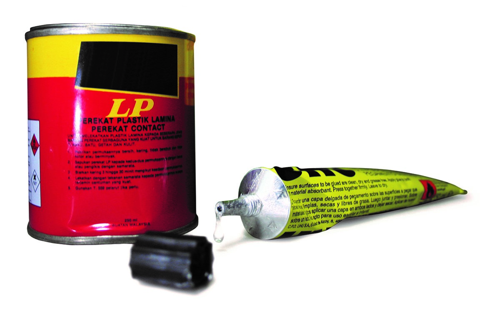

Inhalant Abusers Arrested
Inhalant Abuse in Singapore

Also known as Glue-Sniffing, Solvent Abuse, Solvent Inhalation and Solvent Sniffing, Inhalant Abuse refers to the sniffing of vapours and fumes emitted by some substances, such as glue and paint thinner1. Inhalant abuse affects the growth and development of muscles, nerves and organs. For an inhalant abuser, normal activities like running and shouting can cause death by heart failure. They may also die from suffocation anytime. This is known as Sudden Sniffing Death and it can happen on the very first time or any other time the abuser sniffs glue.
Some of the effects of inhalant abuse1 include permanent damage to brain, liver and kidneys, prone to bleeding and bruises, memory loss, difficulty in learning and seeing things clearly, loss of control of body as well as cramps, pains and bad cough.
Withdrawal symptoms from inhalant abuse1 include anxiety, depression and irritability, aggressive behaviour, dizziness, shaking and nausea as well as insomnia.
Inhalant abuse is significant as inhalants are the most accessible form of substance in comparison to other drugs in Singapore, given that these substances can be purchased over the counter of hardware stores. As such, it is no wonder that drug abusers start out first with inhalant abuse before moving on to other drugs2. A survey conducted by the Institute of Mental Health (IMH) also found that 41.8% of drug abusers started consuming drugs before the age of 182. It should not be an exaggeration then that inhalant abuse could be a main factor and stepping stone for individuals to enter the realm of drug abuse, thus deserving attention and analysis.
Analysis & Implications of Trends of Inhalant Abusers in Singapore
While the real numbers of inhalant abusers in Singapore cannot realistically be obtained, the number of such abusers arrested3 should give some form of reliable indication given the pervasive nature of the country’s surveillance and law enforcement.
(Note: Interact with the graph to view the values)
There has been an overall decline in the number of new and repeat inhalant abusers being arrested. The decreasing number of repeat abusers might be indicative of the effectiveness of the Central Narcotics Bureau’s (CNB) strategy of Structured Rehabilitation & Aftercare Programmes. The number of new abusers that was once consistently higher than that of repeat abusers has evolved to become consistently lower than the latter, hinting at the effectiveness of CNB’s Preventive Drug Education (PDE) as well.
(Note: Interact with the graph to view the values)
Inhalant abusers being arrested consistently tend to be male rather than female. This can possibly be deduced to mean that men tend to be at higher risk of engaging in inhalant abuse than women.
(Note: Interact with the graph to view the values)
The trend of inhalant abusers being arrested preponderantly consisting of youth below 20 seems to have diminished over the years with a largely proportional number of abusers hailing from each age group. Some might argue that this indicates the effectiveness of CNB’s Structured Rehabilitation & Aftercare Programmes, namely the Drug Rehabilitation Centre (DRC), Drug Supervision Scheme (DSS) and Community Rehabilitation Centre (CRC). However, this contradicts the findings of the IMH survey2 that suggest that youths make up a significant number of drug abusers. Thus, this trend being displayed might not be truly indicative of the real numbers of inhalant abusers on the ground as they could potentially be becoming more adept at avoiding being caught and arrested.
(Note: Interact with the graph to view the values)
Earlier on, there seems to be a propensity of overrepresentation of Chinese and Malays amongst inhalant abusers arrested. However, the numbers have decreased and become more proportional across all ethnicities over the years. Even so, the Chinese seem to still consistently have the highest representation. Some might laud the effectiveness of the “Dadah itu Haram” campaign launched by the CNB in 2017 that works with Malay-Muslim organisations and the community to tackle the supposed over-representation of Malays involved with drugs4. Perhaps, a similar move could be considered specifically for the Chinese community too.
1Central Narcotics Bureau. (2023, July 13). Drug Information. https://www.cnb.gov.sg/drug-information/drugs-and-inhalants
2Chua, N. (2023, May 4). Hooked on heroin at 12: IMH survey finds starting mean age for drug consumption in S’pore at 15.9 years. The Straits Times. https://www.straitstimes.com/singapore/hooked-on-heroin-at-12-worrying-trend-of-younger-drug-abusers
3Central Narcotics Bureau. (2023). Data on inhalant abusers arrested. https://beta.data.gov.sg/collections/524/datasets/d_06dec2e253224d72d528ddf39f57a548/view
4Koh, F. (2018, September 24). Seven-member team recognised for anti-drug efforts among Malay-Muslim community. The Straits Times. https://www.straitstimes.com/singapore/seven-man-team-recognised-for-anti-drug-efforts-among-malay-muslim-community